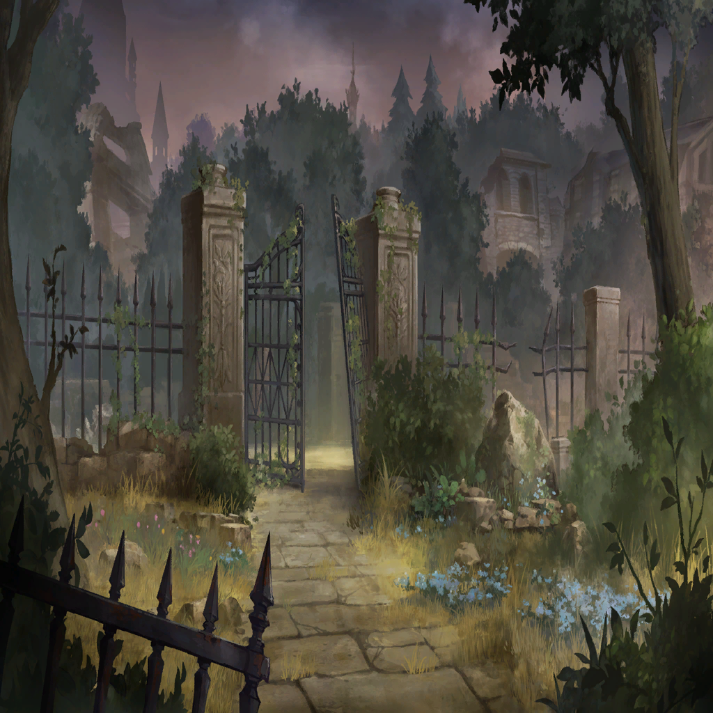

Dias
Dias
Dias
Dias
Dias
Dias
Dias

Dias
Dias
Dias
Dias
Dias
Dias

Dias
Dias
Dias
Dias
Dias
Dias
Dias
Dias
Dias
Dias
Dias
Dias
Dias
Dias
Dias
Dias
Dias
Dias

Zeke
Dias
Zeke
Dias
Zeke
Dias
Dias
Dias
Dias
Dias
Dias
Dias
Dias
Dias
Dias
Dias
| |
| |
Dias |
What a beautiful flower, Yuffie! You've taken really good care of it. |
| Yuffie | ... ...♪ |
Dias |
Hm? Are you going to give me a flower? Thanks, I'll take good care of it. It's a small flower, but blue and beautiful. |
Dias |
(I think this was called a begonia. It's the flower that I was never able to find out what its language was...) |
Dias |
(Oh, that's it! I'll ask Dario to teach me how to read.) |
Dias |
(That way I can learn from Yuffie this flower's language.) |
| Yuffie | ... ... |
Dias |
That's Dario's portion, right? Don't be embarrassed. I'm sure he'll really like it. |
| Yuffie | ... ...! |
Dias |
Yuffie...she's finally starting to smile naturally. I'm so glad that we get to live here. |
| |
| Dario | Is Gabirond being careless with money again? |
| Corpse | Apparently, he needs it to tidy up the hardline factions within the Envylia court. |
| Dario | First Wratharis and then Envylia. He works hard...well, I have been paying for him to do what he does. |
| Corpse | When everything comes to fruition, he promises you will be rewarded handsomely. |
| Dario | Of course. How much does he think I've supported him? I do intend to get a return on my investment. |
| Corpse | By the way, regarding the ancient weapon, do you truly plan to take it outside of this country? |
| Corpse | Even the Corpse was helpless when it came to that object. |
| Dario | Haha! There's no way an outsider can wield Wratharis' ultimate weapon. In order to activate it, you need a special key. |
| Dario | I've finally discovered what the key is. My business here is finally done. |
| Corpse | Your business is done? I thought you were going to move to Northern Pride once you ensured your father's death. |
| Dario | That was the original plan, but father is fairly stubborn... If the dosage of poison is increased, he might notice it. |
| Corpse | Having your brother continue to give him poison disguised as medicine is a lot of work, isn't it? I could just kill him for you. |
| Dario | That would be no fun. |
| Corpse | Is there any fun to be had in the death of a human? |
| Dario | Don't be an idiot. The death of another is the ultimate form of entertainment. That is what I learned at the Dawn of Wrath. |
| Corpse | At that battle? |
| Dario | Back then, I was studying economics at Northern Pride. |
| Dario | When my homeland began the war, at first I panicked. However, something unexpected occurred. Having discovered that I was Wratharis nobility... |
| Dario | The merchants flocked to me for my help in selling weapons and goods. |
| Dario | I mediated the sale of weapons to the nobility and they paid handsomely for it. |
| Dario | Ultimately, when Wratharis was destroyed, what do you think was left to me? A vast fortune. |
| Dario | Even though my homeland had been destroyed, I was able to gain a massive amount of wealth. That's when I understood that war becomes money. |
| Dario | The more other people kill other people, the more money that can be made. Have you ever heard anything more invigorating? I decided to move to the side of enjoyment. |
| Dario | The reason why I fund the Corpse is because I want to grow your little spark of conflict. I want to enjoy the death of more people. |
| Dario | The more tragic the circumstances, the better the wine tastes. Witnessing the death of others is the highest form of entertainment. |
| Corpse | I appreciate your support. However, I cannot understand your mindset. |
| Dario | That's quite the irony to be told that by a killer. |
| Corpse | The Corpse's main aim is not to kill, but ultimately to obtain the Sacred Stones...who's there?! |
| Yuffie | ... ...?! |
| Corpse | Not good...did someone hear us?! |
| Dario | Ah, Yuffie...don't worry. Not only can she not speak, but she can neither read nor write. It doesn't matter what she hears. |
| Corpse | You may be all right with that, but it's problematic for me. I'm sorry, but I'll have to tie up this loose end. |
| Dario | The Corpse can truly be a tedious bunch. No, wait, if you're going to do it at least let's come up with an elaborate plan. |
Dias |
Dario! Did you see Yuffie? I can't find her anywhere... |
| Dario | What?! It isn't the bandits, is it? |
Dias |
Bandits?! They took Yuffie?! |
| Dario | I'm not sure, but...recently, there have been people arriving to inhabit the forest nearby. I was careless as well. |
Dias |
Oh...! We need to save her! |
| Dario | You're right. That being said, it would be too dangerous for just you and me to go. |
| Dario | I'll go ask Sir Crowley for his help. Wait here until I get back! Understood? Don't wander into the forest alone. |
Dias |
O-okay...understood. Please hurry, brother! |
| Dario | Of course! I'll be back right away. |
Dias |
Dario still isn't back! Meanwhile, who knows what's happening to Yuffie...Yuffie...! |
Dias |
Argh...I can't wait anymore! I'll go rescue Yuffie on my own! |
| |
Dias |
Yuffie! Yuffie! Ack... If only I could hear some sound. |
Dias |
Yuffie...? Are you over there?! |
Dias |
Stop!!! |
Dias |
You! You! Let Yuffie go! |
| Yuffie | ... ...! |
| Corpse | Jeez. What a messy situation. But I must obey Lord Dario's instructions. |
Dias |
Aghh...? You...let Yuffie...go... |
| Yuffie | ...! ...!!! |
| Corpse | What a feisty brat! |
Dias |
Aghh...! Arghh...Yuffie! |
Dias |
Ack? Huh? ...Dario? |
| Dario | You're putting up a surprising amount of resistance, Dias. |
Dias |
Brother?! What are you doing? Move your foot...please! Yuffie is...! The bandit is over there...where's Zeke?! |
| Dario | Hm? Oh. Zeke isn't coming. More importantly, Yuffie's on the verge of being killed. You better save her soon! |
Dias |
Agfff...! Br-brother...? Why...? |
| Dario | Look, Dias. Your adorable little sister is about to be killed. |
Dias |
Brother, please stop! Aghh...Yuffie...! |
| Corpse | Lord Dario, isn't that enough? At least allow her not to suffer. |
| Yuffie | ... ...! |
Dias |
Stop! Stoooooppppp!!! |
Dias |
Oooohhh!!! Yufffiiieee...!!! |
| Dario | Oh dear, she died... Your sister, who was so desperate for your help...but you let her get slaughtered. |
| Dario | You're a terrible person, Dias. |
Dias |
Wh-what are you talking about? What are you saying?! You murderer! Yuffie...ohh, Yuffie!!! |
Dias |
Dario, you were tricking us. All this time...you were tricking us. Aaah! |
| Dario | But you know that's not true, Dias. You need to change your tone. |
| Dario | It's supposed to be: "Thank you for using a helpless, incompetent, worthless brat like me as a tool, Lord Dario." Right? |
| Dario | You got to be played by me like a toy. You should be grateful, Dias. |
| Dario | Here. Say it. "Thank you for using and disposing of me, Lord Dario." |
Dias |
You... |
| Dario | Huh? Did you not hear me very well? |
Dias |
I said die, you piece of filth! |
| Dario | How unfortunate. I never expected you to be such a stupid child. |
| Corpse | Hey... If someone were to hear all this commotion, it could be troublesome. |
| Dario | Yes. You're right. Let's go soon. |
| ??? | Lord Dario, the mansion has been cleaned up as well. |
| Corpse | Who's there?! I couldn't sense you at all... |
| Dario | This is my private army. Don't worry. Business is often accompanied by complications. This is one of the individuals I hired for my own protection. |
| Dario | His name is the Jaw, which comes from his ability to crush and consume every blade that opposes him. He can come quite in handy. |
| Jaw | As long as there's money, I'm selective about my work. Setting an aristocrat’s mansion on fire is a walk in the park. |
| Dario | Tonight, House Nash will disappear. I'm sure my bed-ridden father will burn well too. |
| Corpse | ...Let's take out this kid too. |
| Dario | Ah, that won't be necessary. What can a helpless little brat like this ever hope to accomplish? |
| Dario | Discard him. Just the thought of him struggling to live with the truth of his own weakness and the regret of having not been able to save his sister... |
| Dario | Oh, the pleasure of it! Wouldn't you agree, Dias? I want you to live forever with that feeling of helplessness and regret inside of you. |
| Dario | Remembering this will make any wine I taste that much more delicious! Ahahahahahahahahahah! |
| Corpse | What a pitiful child. If you choose to blame anything, blame yourself for having been born into this world. |
Dias |
... ... |
|  | |
Dias |
... ... |
Zeke |
Everything was burned down. What exactly happened to Lord Nash?! |
Dias |
... ... |
Zeke |
Dias, if you would like it, come live at my house. |
Dias |
Are you going to be the one to use me this time? |
Zeke |
(?! What cold and dark eyes this child has...) |
Dias |
(...Ultimately, I survived. I became my father's adopted son...and I spent my days with Logi and Agatha...) |
Dias |
(Still, I never fully trusted my father.) |
Dias |
(Deep inside my heart, I was afraid of being betrayed again.) |
Dias |
(Gabirond took advantage of this vulnerability. Honestly...it's pathetic. Only now can I see that.) |
Dias |
(The mayor, Gabirond, Dario...they are only able to see others as tools.) |
Dias |
(My father was never that way.) |
Dias |
I could not even realize such a simple truth as that. Father, I couldn't see anything. |
Dias |
Yet, that time, when I cut you down...I did not regret it. |
Dias |
No matter the reason, the one thing I could not let you do was to kill Agatha. |
Dias |
Enough. I've had enough of seeing my sisters dying in front of my eyes! |
Dias |
What's the commotion? |
| |
| Holy Guard Knight B | Ack! Why are there monsters here out of all places...? |
| Holy Guard Knight C | Hold formation! We are the proud Paladins of the Holy Guard. |